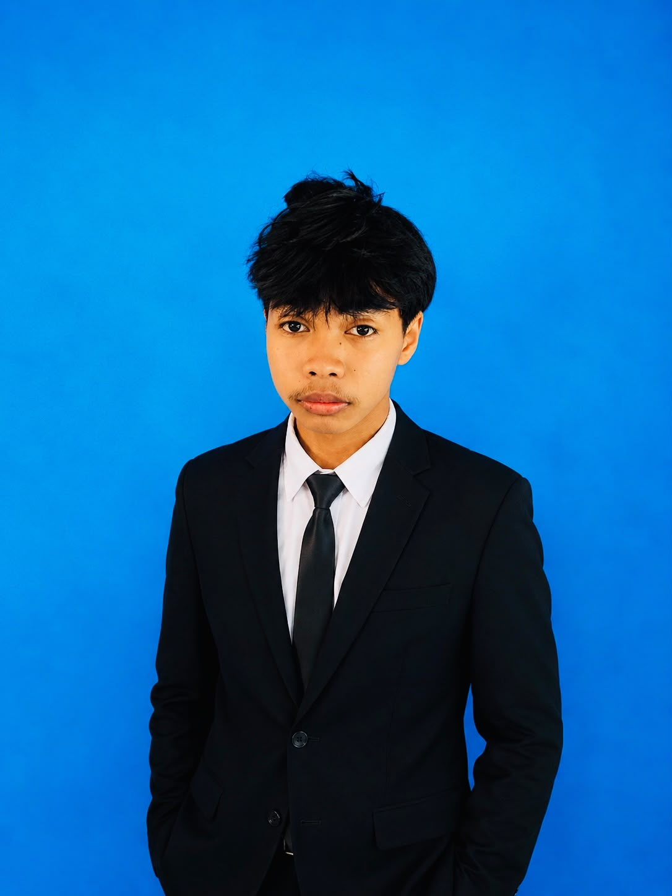

Halo, saya Mustawan
Siswa kelas XI jurusan Rekayasa Perangkat Lunak yang senang belajar hal baru, suka membuat proyek kecil, dan sedang membangun portofolio langkah demi langkah.
Tentang Saya

- Nama
- Mustawan
- Status
- Siswa RPL
- Lokasi
- Sambas, Kalbar
- Minat
- Web & Mobile
Saya adalah siswa di SMKN 1 Semparuk. Rasa penasaran saya pada dunia teknologi dimulai sejak SMP, dan sejak itu saya rutin mempelajari dasar-dasar pemrograman secara mandiri maupun melalui kegiatan di sekolah.
Fokus utama saya saat ini adalah memahami logika pemrograman, pembuatan struktur web yang rapi, serta melatih kemampuan penyelesaian masalah (problem solving).
Keahlian
HTML & CSS
Membuat struktur web semantis dan desain responsif sederhana.
JavaScript
Interaktivitas dasar DOM, event handling, dan logika sederhana.
PHP & MySQL
Dasar alur backend, pemrosesan form, dan manipulasi database dasar.
Tools & Git
VS Code, Git dasar, GitHub, serta alur kerja repositori.
Proyek Pilihan
Sistem Kasir Sederhana
Aplikasi pencatatan transaksi toko berbasis PHP dan MySQL untuk tugas mata pelajaran RPL.
Landing Page Sekolah
Rancangan ulang tampilan depan halaman informasi ekstrakurikuler sekolah.
Pendidikan
SMKN 1 Semparuk
Jurusan Rekayasa Perangkat Lunak, aktif di Klub Komputer.
MTs Al-Hikmah Sidang
Lulus dengan predikat siswa berprestasi bidang TIK.
SDN 10 Serindang
Mulai tertarik pada komputer sejak kelas 5 SD.
Mari Terhubung
Terbuka untuk kolaborasi proyek sekolah, magang, atau sekadar bertukar cerita seputar belajar coding.